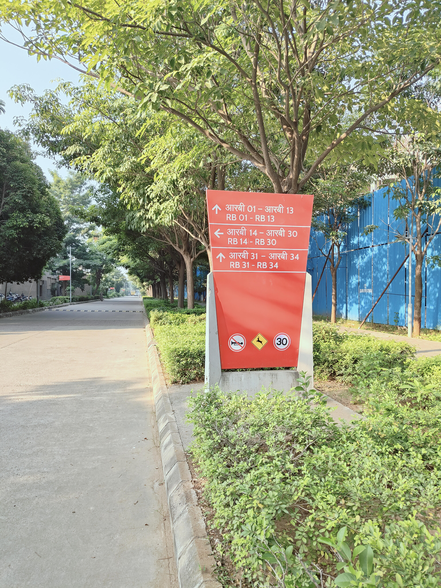
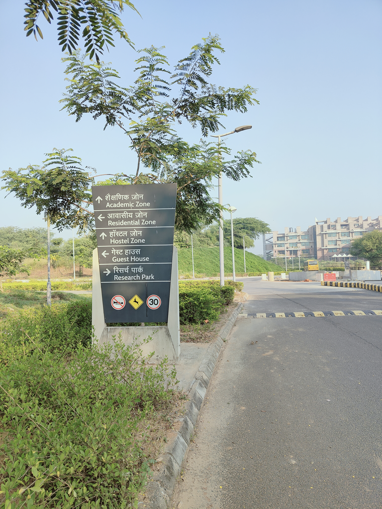
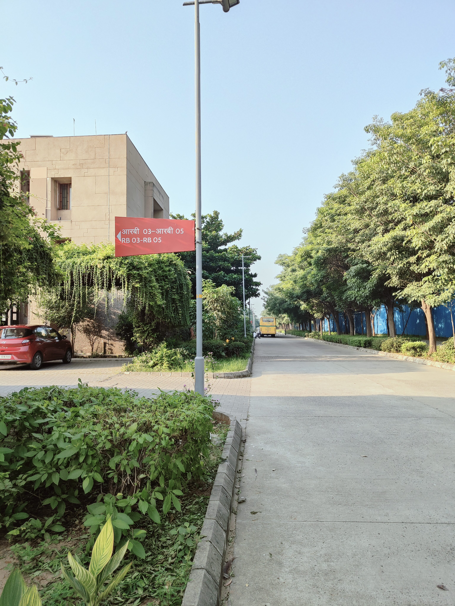
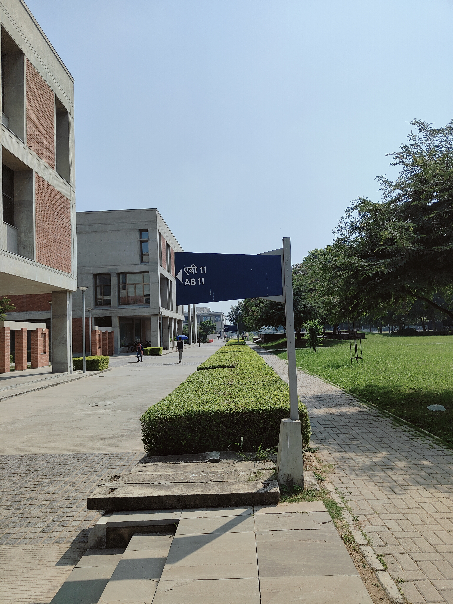
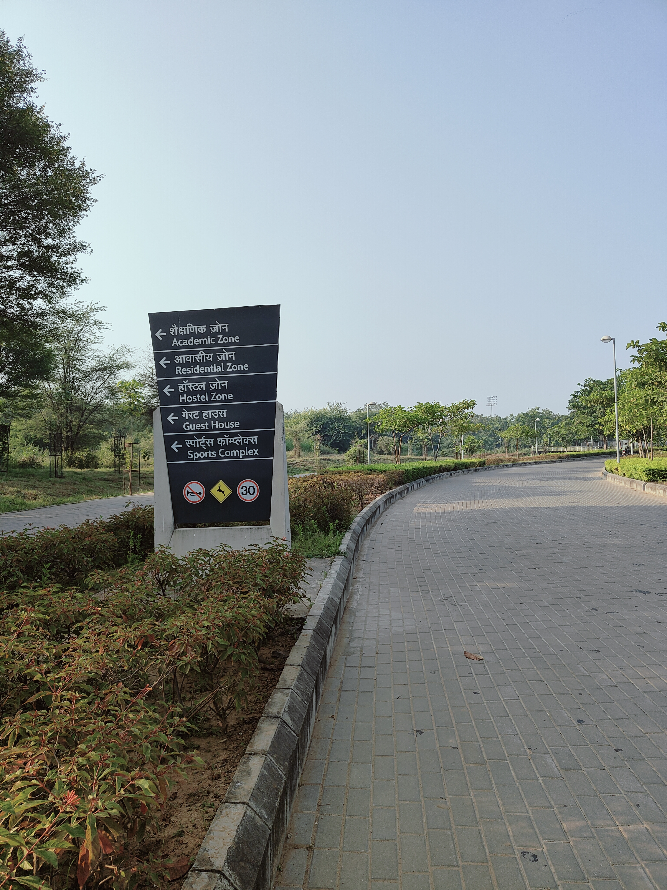

The signage system on the IIT Gandhinagar campus has been designed to emphasize the unique educational environment of the campus, to provide functional convenience for the academic community for mutual interaction, and to be durable with minimum maintenance.

IIT Gandhinagar is a big campus, but finding your way around doesn't have to be difficult. Our wayfinding signage is here to help you navigate with confidence.

At every important junction, you'll find signs pointing you towards key buildings and facilities. Just look for your destination and follow the directions.

Academic buildings, hostels, residential areas, sports facilities and other important places are clearly identified. Remember the name of your destination and let the signs guide you there.

You don't need to memorise the entire route. Follow the signs as you move through campus—they'll keep guiding you at the next turn.

Buildings, open spaces and other campus features can also help you stay oriented. As you explore, you'll gradually build your own mental map of IITGN.
Wayfinding isn't just about getting from A to B. It's about discovering the campus along the way. So follow the signs, explore your surroundings, and enjoy your time at IIT Gandhinagar!